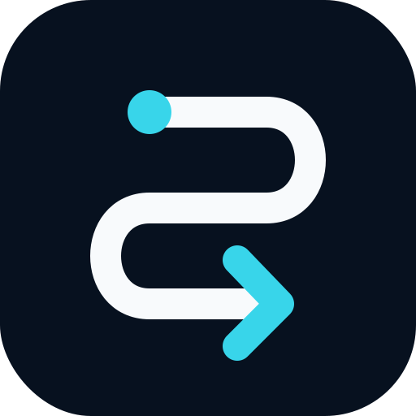

Two platforms now write a large share of your code: Claude Code and GitHub Copilot. Each ships its own admin surface — different consoles, different APIs, different gaps. Today, proving "which MCP servers are allowed, who can skip code review, and what we're spending" means stitching together a dozen screens and trusting that nobody changed a setting last Tuesday.
Air-Traffic governs each platform through whichever mechanism actually works — and labels it honestly. VendorNative drives the vendor's admin API. EnvManaged pushes managed configuration into the developer environment and reads it back. ProxyEnforced is an optional add-on (off by default). MonitorOnly verifies & alerts. The tier badge (A server-side · B MDM-locked · C seed-only) tells you how strong the enforcement really is.
| MCP servers — allow / deny | EnvManagedB | allowedMcpServers / deniedMcpServers / allowManagedMcpServersOnly — locked on MDM-managed devices |
| Shared hooks | EnvManagedB | allowManagedHooksOnly, allowedHttpHookUrls — org-injected pre/post hooks |
| Permissions / tool rules | EnvManagedB | allowManagedPermissionRulesOnly — managed rules override user & project |
| Skill / agent execution | EnvManagedB | disableSkillShellExecution, disableAgentView |
| Model assignment | EnvManagedB | restrict callable models via managed settings (raw-API path → optional gateway) |
| Per-user usage & spend | VendorNative | Anthropic Usage/Cost API + Claude Code Analytics (commits, PRs, lines, sessions); hard cap → MonitorOnly |
| Drift read-back | VendorNative | claude doctor reports each effective setting + its source |
| MCP server access | EnvManagedA | registry-only allowlist, enforced server-side — user cannot add unlisted servers |
| Feature policies | EnvManagedA | Chat / CLI / Cloud Agent / Extensions on-off via Enterprise AI Controls |
| Content exclusions | VendorNative | REST /orgs/{org}/copilot/content_exclusion — repos & path globs |
| Code-review gate | EnvManagedA | branch-protection / rulesets: required human reviewers, enforced at merge |
| Test-coverage gate | EnvManagedA | required status checks (e.g. coverage-90) before an agent commit lands |
| Seat & AI-credit spend | VendorNative | seats + billing/usage API; 1 credit = $0.01; hard token cap → MonitorOnly |
| Usage metrics | VendorNative | /copilot/metrics — 28-day rolling, by team / language / editor |
| Agentic audit | VendorNative | agent_session.task events, actor:Copilot (GA Feb 2026), commit→session, 180-day |
"Governed" is not one thing. Air-Traffic grades every control by how hard it is to bypass — and never paints a soft control green.
managed-settings.json (MCP, hooks, permissions, skill exec) takes top precedence over user & project settings — but only when the file is present. Real enforcement requires the device to be MDM-enrolled (Jamf / Intune / Kandji).Air-Traffic is a control plane + config distributor, not a man-in-the-middle on your model calls. It drives each platform's admin surface, pushes managed config into the environment, and reads the effective state back for drift — then normalizes everything into one observability stream.
/v1/messages or Copilot completions. Spend is monitored from the vendors' usage APIs and capped softly; only if you ever need a hard, mid-request, cross-vendor cutoff do you switch on the optional gateway module — and nothing else depends on it.One policy declaration compiles into the exact managed artifacts each platform understands — pushed, then verified.
{
"permissions": { "allowManagedPermissionRulesOnly": true },
"allowManagedMcpServersOnly": true,
"allowedMcpServers": ["filesystem", "git", "internal-db-readonly"],
"deniedMcpServers": ["*"],
"allowManagedHooksOnly": true,
"hooks": { "PreToolUse": ["secret-scan"], "PostCommit": ["run-tests"] },
"disableSkillShellExecution": true
}
// deployed via MDM → /Library/Application Support/ClaudeCode/managed-settings.json
// verified with: claude doctor (effective setting + source){
"required_pull_request_reviews": { "required_approving_review_count": 1,
"require_code_owner_reviews": true },
"required_status_checks": { "strict": true,
"checks": [{ "context": "tests" },
{ "context": "coverage-90" }] },
"enforce_admins": true
}
// PUT /repos/{org}/{repo}/branches/{branch}/protection
// → an agent commit cannot merge without human review + passing coverage| Platform | Policy sync | Top enforcement | Spend (MTD) | Drift |
|---|---|---|---|---|
| Claude Code | ✓ synced | MCP + hooks EnvManagedB | $6,240 | none |
| GitHub Copilot | ✓ synced | Review + MCP EnvManagedA | $4,815 | none |
| Platform Eng — laptops MDM-enrolled | 42 / 44 managed 2 unmanaged → monitored | |||
| Agentic actions audited (30d) | 18,402 events · 0 unattributed | |||
ops-observation-batch/v1 stream a SIEM can ingest.Air-Traffic · Enterprise AI Control Plane & Observability — Claude Code × GitHub Copilot · June 2026
Vendor marks shown for identification only and remain the property of their respective owners (Claude Code and GitHub Copilot glyphs via simple-icons). Air-Traffic brand: web/public/icons/. Figures illustrative — the backend is synthetic.